[Index] [1] [2] [3] [4] [5] [6] [7]
HDFView displays datasets in a two-dimensional table, the TableView. The TableView allows you to view and change the values of an image's dataset. You can select rows and columns and plot the row/column data in a line plot. The current version of HDFView does not allow you to change data values of an HDF4 Vdata.
If a dataset has three or more dimensions you can only view two dimensions at a time. Using the Dataset Selection Dialog, you may select any two dimensions of the dataset to display and a third dimension to flip the two-dimension table along that dimension.
To open the entire contents of a dataset, double-click on the dataset or select the dataset, then choose the “Open” command from the Context menu. A new spreadsheet window is created.
HDFView displays numerical datasets in a “spreadsheet”, which shows the data values in a grid. A one-dimensional dataset is displayed as a single column and a number of rows of dimension size. A two-dimensional dataset is displayed as a number of columns of the first dimension size and a number of rows of the second dimension size, i.e. dim[0]=height and dim[1]=width by default. You can change the order of the dimensions using the “Open As” command.
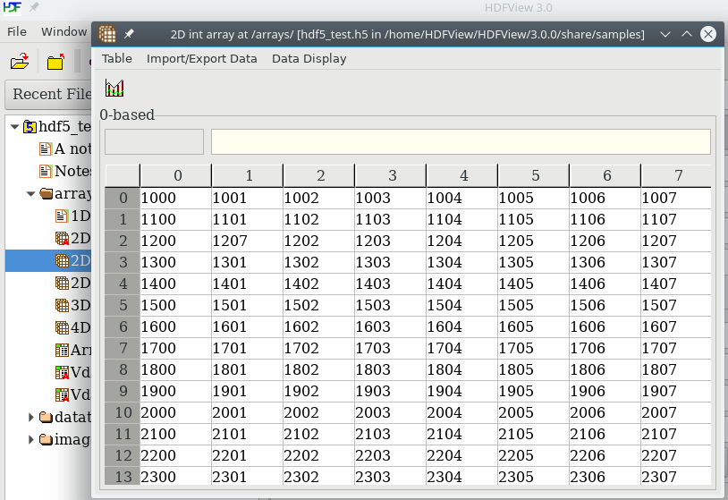
Spreadsheet with a 2-D dataset
Opening an entire large dataset may cause an ‘Out Of Memory Error’ because the Java Virtual Machine cannot create the required objects. HDFView provides options to select a subset of a dataset for display. You can also select dimensions and the order of dimensions to display, e.g., to switch the columns and rows.
To make a selection, select a dataset from the tree and choose the “Open As” command from the Context menu. The selection dialog box appears. You can make a selection by dragging the mouse on the preview image or entering the values of start, end, and stride. The figure below shows that a subset of size 66 x 159 is selected from a true color image with the size of 179 x 359.
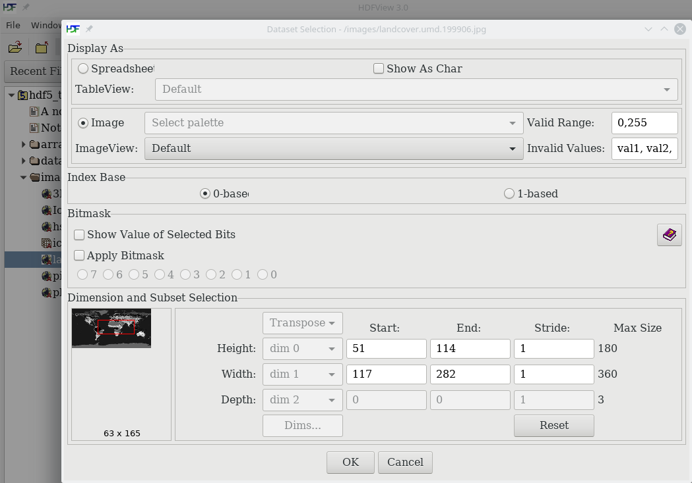
The Dataset Selection dialog box
By default, a scalar dataset (e.g., a dataset or SDS of numbers) is displayed in a spreadsheet. You can also display a dataset as an image. To display a dataset as an image, click the Image radio button in the Dataset Selection dialog box and select a predefined color table for the dataset. This operation takes the data values of the dataset as values of an indexed array, i.e., as indices into a palette. The default palette will be used to create the image from the dataset if it does not have an attached palette. If the data values are not integers or have a range outside 0 to 255: they are binned into 256 equally spaced intervals.
The "Open As" option allows you to set a range of valid data values, as well as setting specific values to be considered invalid, when displaying a dataset as an image (see dataset selection dialog figure above). By setting these, any pixels (data points) whose values are outside the valid range will not be shown and pixels whose value has been set as an invalid value will be mapped to 0. As an example, the figure below shows a dataset with the value '55' set to be invalid:
A subset is determined by the start and end locations, and the stride. The “Start” array determines the starting coordinates of the subset to select. The “End” array determines the ending coordinates of the subset to select. The “Stride” array chooses array locations from the dataspace with each value in the stride array determining how many elements to move in each dimension. Setting a value in the stride array to 1 moves to each element in that dimension of the dataspace; setting a value of 2 in a location in the stride array moves to every other element in that dimension of the dataspace. In other words, the stride determines the number of elements to move from the start location in each dimension.
HDFView uses a common-sense indexing scheme for selecting rows and columns. If the user wants a subset that begins at i,j the START coordinates will start at j, j instead of i-1, j-1.
An example of a 2-D integer dataset of size 8 X 9.
| 11 | 12 | 13 | 14 | 15 | 16 | 17 | 18 | 19 |
| 21 | 22 | 23 | 24 | 25 | 26 | 27 | 28 | 29 |
| 31 | 32 | 33 | 34 | 35 | 36 | 37 | 38 | 39 |
| 41 | 42 | 43 | 44 | 45 | 46 | 47 | 48 | 49 |
| 51 | 52 | 53 | 54 | 55 | 56 | 57 | 58 | 59 |
| 61 | 62 | 63 | 64 | 65 | 66 | 67 | 68 | 69 |
| 71 | 72 | 73 | 74 | 75 | 76 | 77 | 78 | 79 |
| 81 | 82 | 83 | 84 | 85 | 86 | 87 | 88 | 89 |
The following are a few examples of subsets of the 2-D int array.
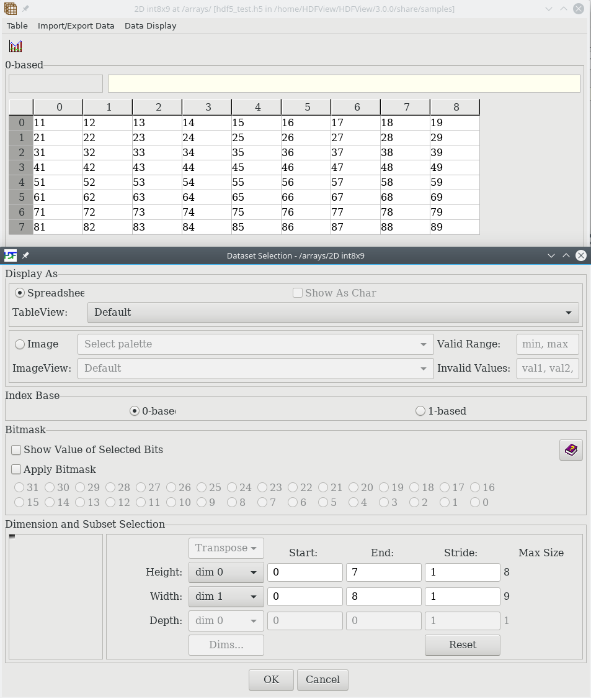
The whole dataset -- start=(0, 0), end=(7, 8) and stride=(1, 1)
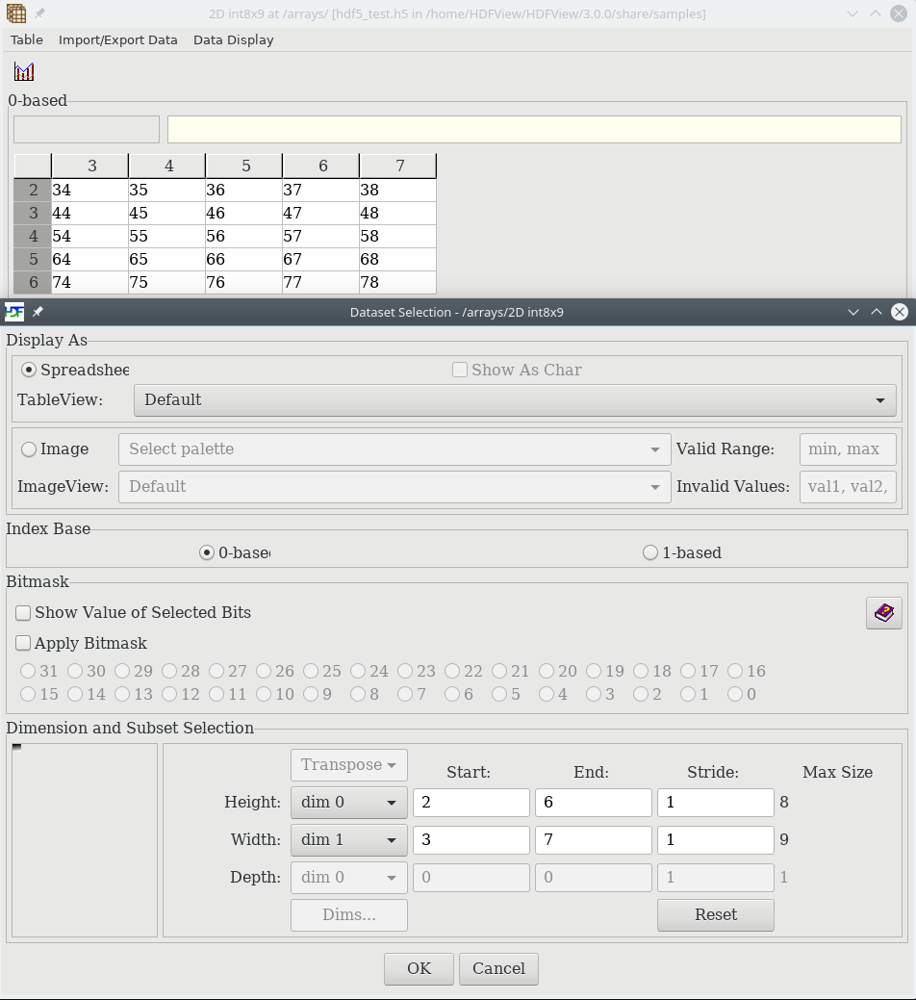
Subset -- start=(2, 3), end=(6, 7) and stride=(1, 1)
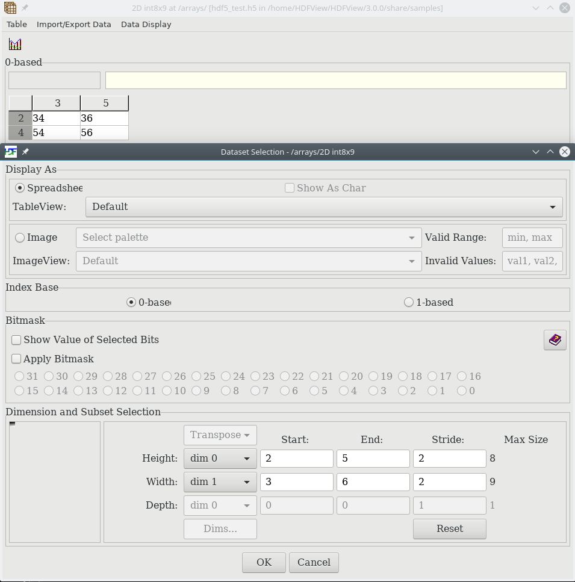
Subset with stride -- start=(2, 3), end=(5, 6) and stride=(2, 2)
For a three or more dimensional dataset, the first two dimensions are displayed as a 2-D spreadsheet, and the third dimension is chosen as the page number of the 2-D spreadsheet, i.e. dim[0]=height, dim[1]=width and dim[2]=depth by default. Using the “Open As” option to change the default order of dimensions, the user can flip the page forward or backward to look at the 2D data values at different positions along the third dimension. The current page number is displayed in the status bar of the HDFView.
To flip a data sheet of a 3-D dataset, use the “First”, “Previous”, “Next” or “Last” command on the tool bar.
The following figure shows how a 4-D integer dataset of size 5 x 4 x 3 x 2 is displayed. The data is displayed in a spreadsheet of 5 X 4 (dim0 by dim1), of page 2 (dim2), cutting locations 2 at dim3.
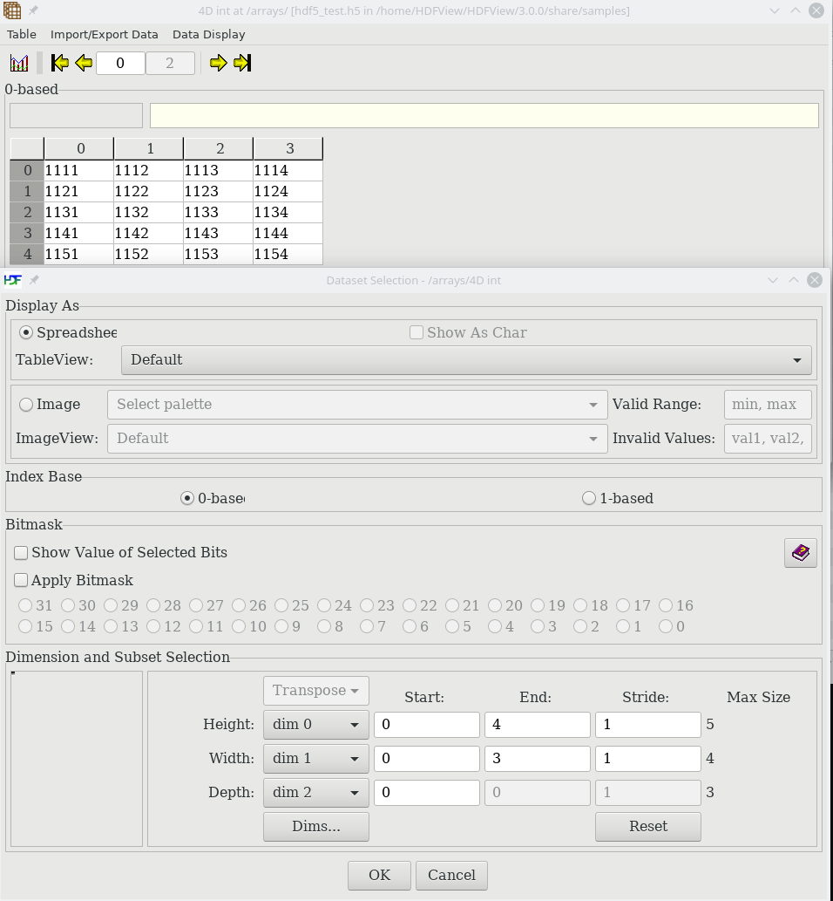
Spreadsheet with 4-D dataset
By default, HDFView chooses the first coordinate, dim[0], as the ROW index and the second coordinate, dim[1], as the COLUMN index. For example, a 2-D dataset of 8 X 9 (dim0=8, dim1=9) is displayed as eight rows and nine columns by default.
You can also swap the dimension order. However, swapping the dimension order does not change the data order. To change the data order, use the “Transpose” option. Swapping and transposing only apply to the data in the display and not to the data in the file.
Let us use the previous example to demonstrate this procedure.
| 11 | 12 | 13 | 14 | 15 | 16 | 17 | 18 | 19 |
| 21 | 22 | 23 | 24 | 25 | 26 | 27 | 28 | 29 |
| 31 | 32 | 33 | 34 | 35 | 36 | 37 | 38 | 39 |
| 41 | 42 | 43 | 44 | 45 | 46 | 47 | 48 | 49 |
| 51 | 52 | 53 | 54 | 55 | 56 | 57 | 58 | 59 |
| 61 | 62 | 63 | 64 | 65 | 66 | 67 | 68 | 69 |
| 71 | 72 | 73 | 74 | 75 | 76 | 77 | 78 | 79 |
| 81 | 82 | 83 | 84 | 85 | 86 | 87 | 88 | 89 |
By default, the dataset is displayed as eight rows and nine columns.
Default dimension order -- row index = dim[0], column index = dim[1]
Swap row and column dimensions to display the dataset as nine rows and eight columns and transpose the data (changing the data order) when we swap the row and column dimensions. To transpose the data, select the “Transpose” option from the drop-down menu. For example, transpose the data to display the dataset as nine rows and eight columns.
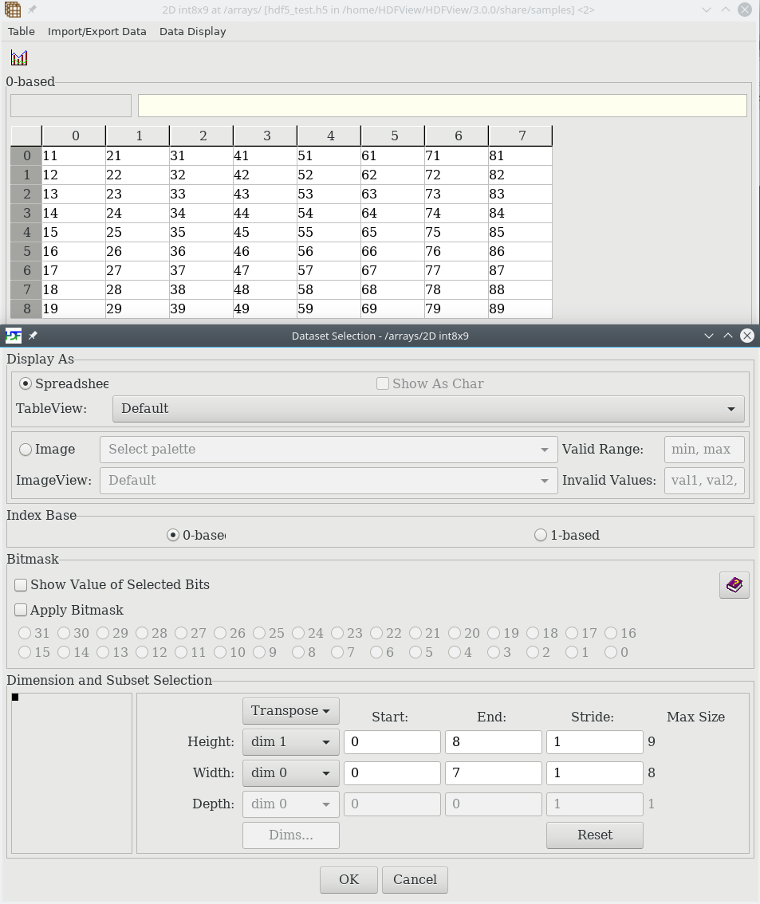
Swap row/column dimensions -- row index = dim[1], column index = dim[0]
In some cases, we also want to reshape the data (not changing the data order) when we swap the row and column dimensions. To reshape the data, select the “Reshape” option from the drop-down menu. For example, reshape the data to display the dataset as nine rows and eight columns. The order of data stays the same (counting from the location [0, 0], [0, 1], ... [2, 0], [2, 1], ...).
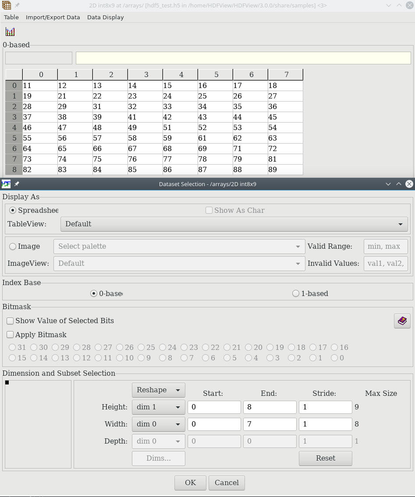
Transpose data -- row index = dim[1], column index = dim[0]
HDFView displays HDF4 Vdata and a simple, one-dimension HDF5 compound dataset (without a nested compound) as a 2-D table with rows as records and columns as fields/members.
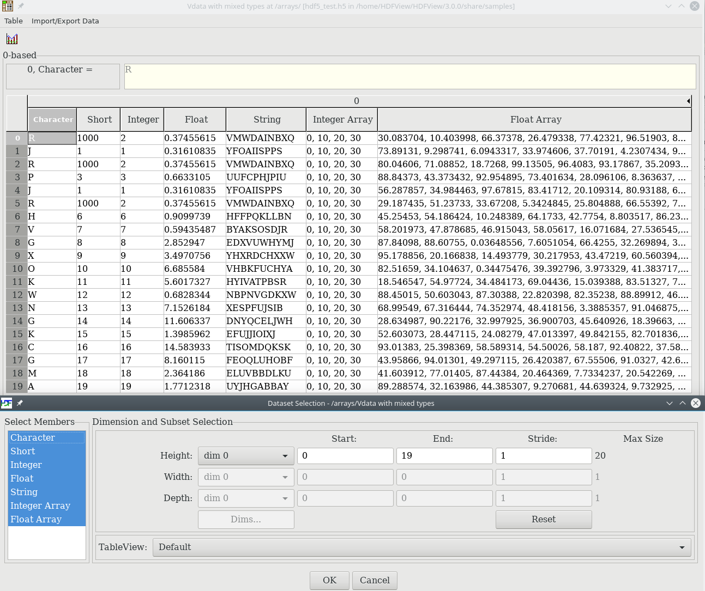
Compound dataset
You can also select fields/members to display. For a contiguous selection, hold down the “Shift” key while clicking the first and last fields/members of your selection. For a discontiguous selection, hold down the “Ctrl” key while clicking the fields/members that you want to select.
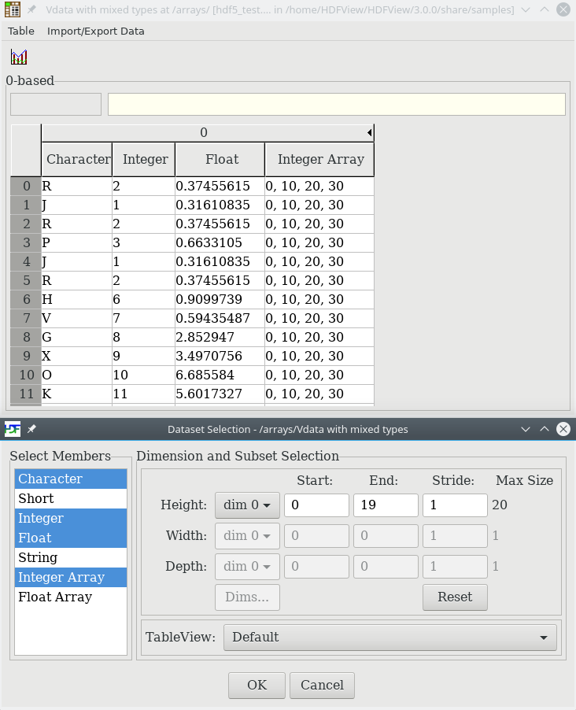
Field/Member selection of a compound dataset
HDFView displays a nested HDF5 compound dataset as a nested list of members, only for two levels. The nested names are separated by “->” for more deeply nested names. For example, if a compound dataset “A” has the following nested structure:
A --> a_name
A --> b_name
A --> c_name
A --> nested_name --> a_name
A --> nested_name --> c_name
i.e.
A = {a_name, b_name, c_name, nested_name{a_name, c_name}}
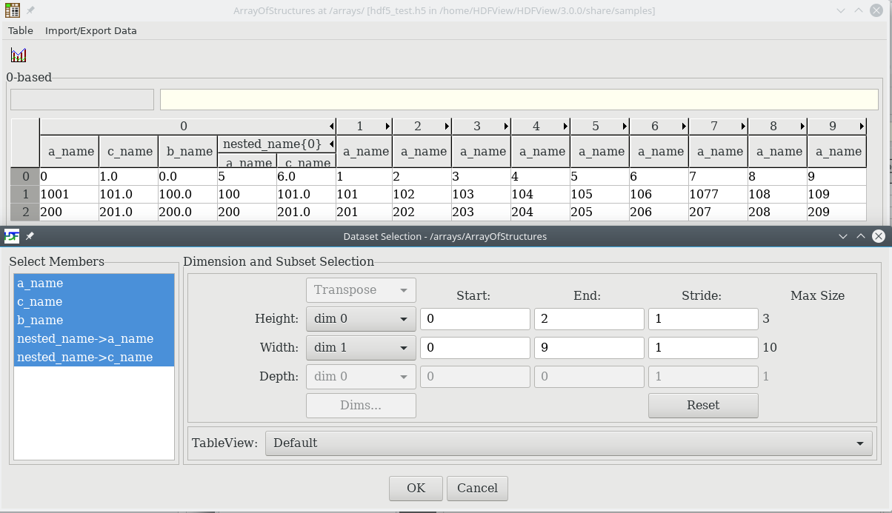
Nested compound dataset
If the nested_name->a_name member of the compound dataset “A” had members:
A --> a_name
A --> b_name
A --> c_name
A --> nested_name --> a_name --> d_name
A --> nested_name --> c_name --> e_name
i.e.
A = {a_name, b_name, c_name, nested_name{a_name{d_name, e_name}, c_name}}
Then the more deeply nested header names include the full parent name with “->”.
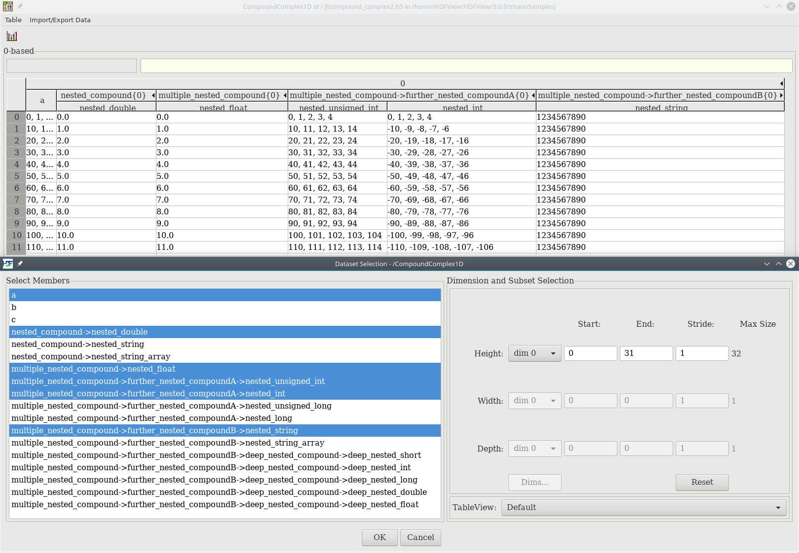
Nested compound dataset
HDFView displays multi-dimension compound datasets as a 2-D table with nested sub-columns. The members are shown in the sub-columns with nested header names appended with {#} where # is the dimension index.
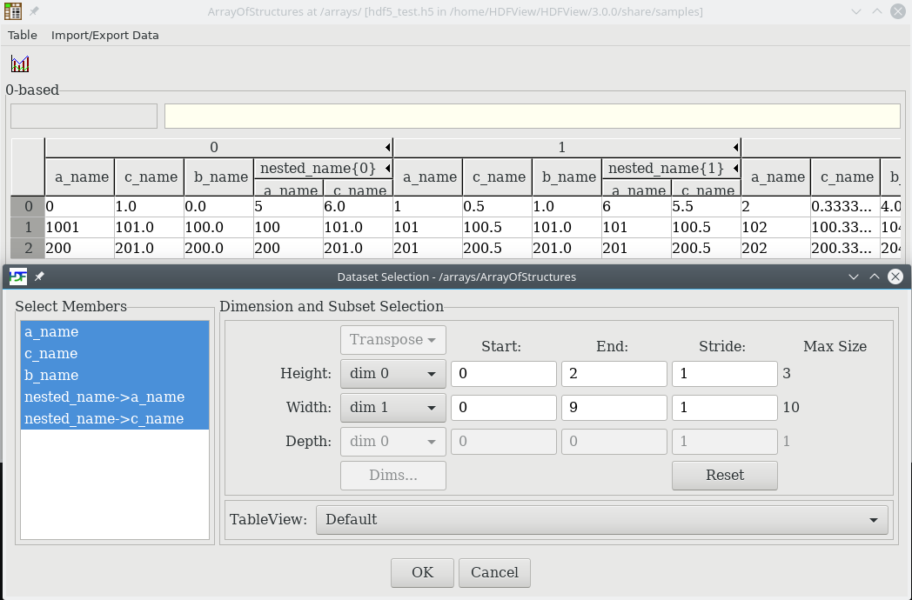
2-D compound dataset
Column or row data of numerical values can be displayed in a simple line
plot. Select rows or columns by dragging the mouse on the rows or columns
that you want to plot; then click the chart icon:
 . The row or column data is plotted
against a column or row index, respectively.
. The row or column data is plotted
against a column or row index, respectively.
The following figure shows that data of five columns are displayed in five lines of different colors. The horizontal labels are the row index of the 100 data points. The vertical labels are the ten points of equal data range with the maximum and minimum of the column data. The line legend is drawn at the right of the line plot with column names and line colors.
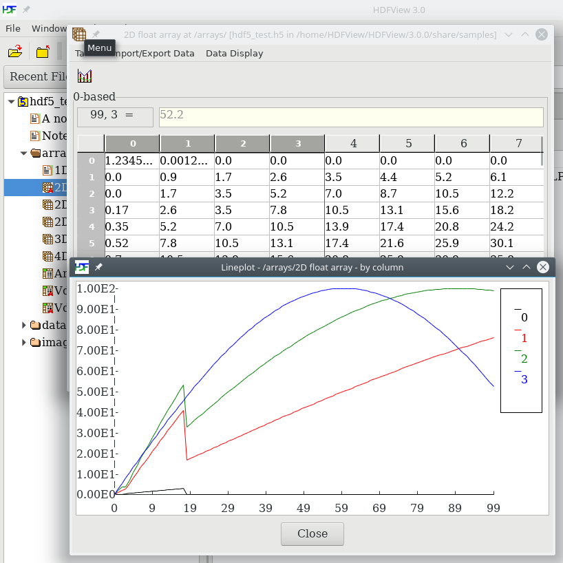
Line plot
You can change the values of a dataset in two ways: type data into the table cell or paste data from the system clipboard. HDFView rejects invalid data values. For example, it does not accept a floating point number into an integer dataset. The table below lists the rules for entering data. Any changes of data values only exist in memory. They are not saved to file until you choose “Save” from the File menu, or, when you dismiss the table, you will be asked if you want to save the changes to the file.
| Data type | Acceptable formats |
|---|---|
| byte | -127 to 128 |
| short | -32768 to 32767 |
| int | -2147483648 to 2147483647 |
| float, double | Numbers of the form “99.9” or “8”, and “-9.9” or “-9”, and “.9” or “-.9” Numeric overflow or underflow will be detected. |
| string | A string longer than the stored value will be silently truncated when written to the file. |
| unsigned byte | 0 to 255 |
| unsigned short | 0 to 65535 |
| unsigned int | 0 to 4294967295 |
Data values can be copied with “Copy” and “Paste”. Data can be copied within a spreadsheet or between two spreadsheets. To copy data, select the data cells to copy, then choose the “Copy” command from the Table menu. Then select the cells to paste into and select the “Paste“ command from the Table menu.
You can also copy and paste between HDFView and other applications. To copy external data from other applications such as a text editor or Microsoft Excel, select and copy data from the application, then paste the data into the HDFView TableView, and vice versa.
You can also change values by using predefined math functions. To change table values, select the data area and choose the “Math conversion” command from the Table menu. A list of predefined mathematic functions are provided. Select a function and enter the function parameters. The values of the selected data cells will be changed based on the mathematic function.
Writing table data into an ASCII file is nearly transparent. Select “Import/Export Data” from the menu bar, then select “Export data to Text File” from the dropdown menu, and the Save Current Data to Text File dialog box pops up for you to enter the name of the file. The data values of the current table will be written to the file. The data values are separated by the data delimiter specified in “User Options”. The text file does not contain any datatype and dataspace information..
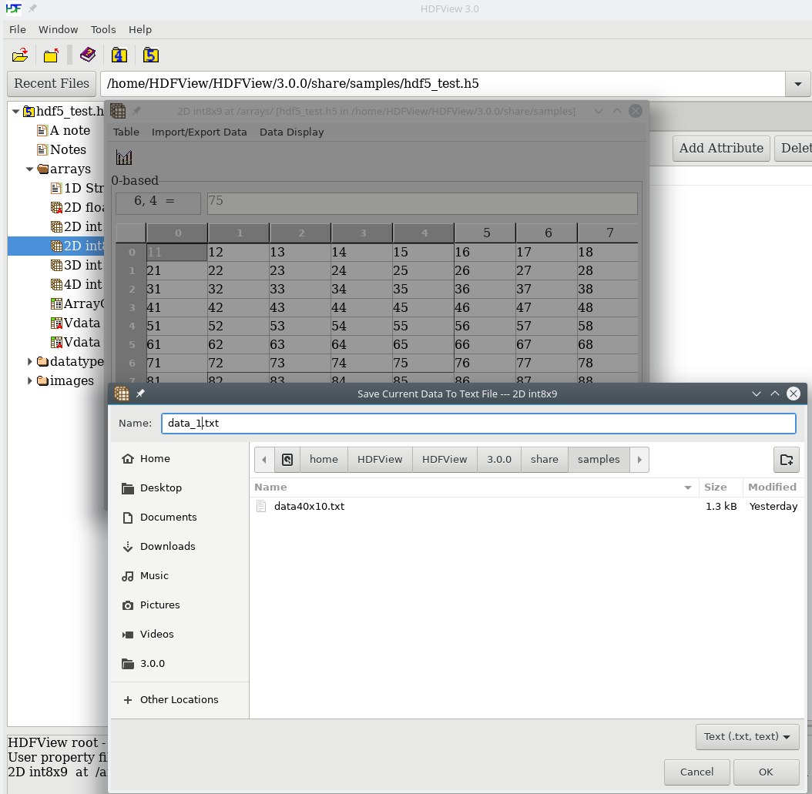
Save current data to text file
You can fill the table cells directly from a text file. Select “Import/Export Data” from the menu bar, then select the “Import Data From Text File” command from the dropdown menu and select the text file to import. The data values must be separated by a space or the delimiter specified in “User Options”. The cells of the table are filled row by row starting with the selected cell. The line breaks in the text file are not important. For example,
10 11 12 13 14 15 16 17 18 19 20 21
and
10 11 12 13 14 15 16 17 18 19 20 21
are the same.
A dataset can store reference values of other datasets in the same file.
A dataset can store object references of other datasets. You can open a dataset containing object references. You can then select and right click on any value in the dataset and it will give two options, to either open as a table or an image.
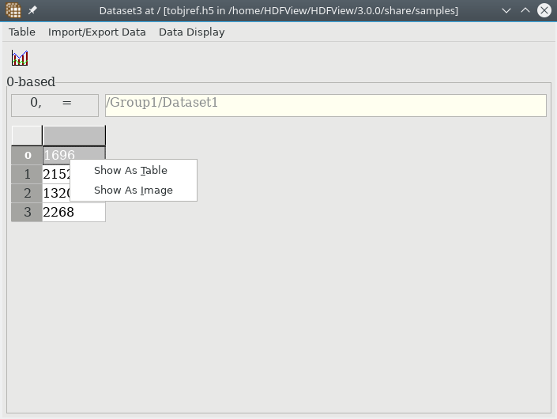
Dataset storing object references
If opened as a table, then the dataset of reference value “1696” is opened as shown below.
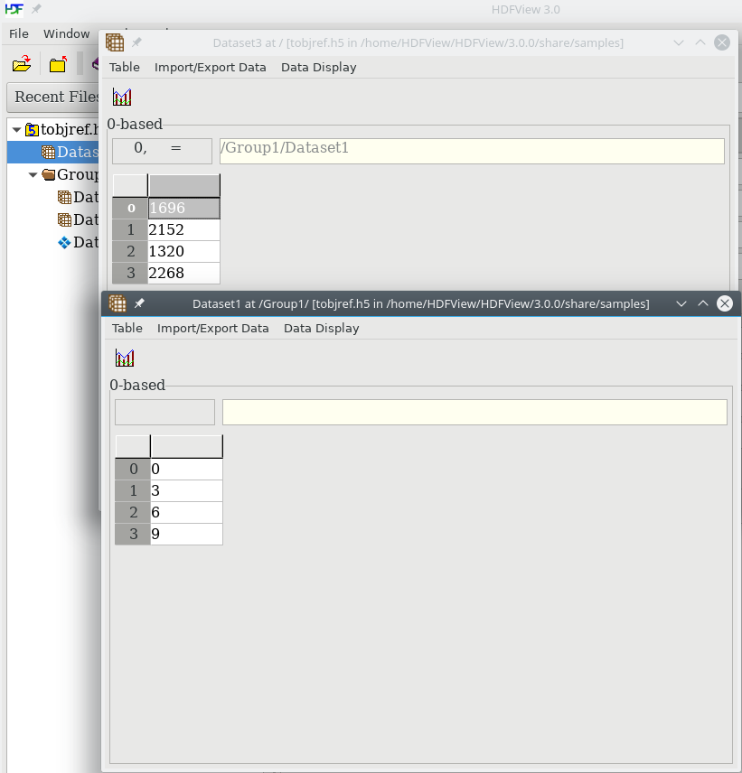
Dataset pointed by object reference
A dataset can store dataset region reference values. You can right click on any value to either show the dataset as a table or an image.
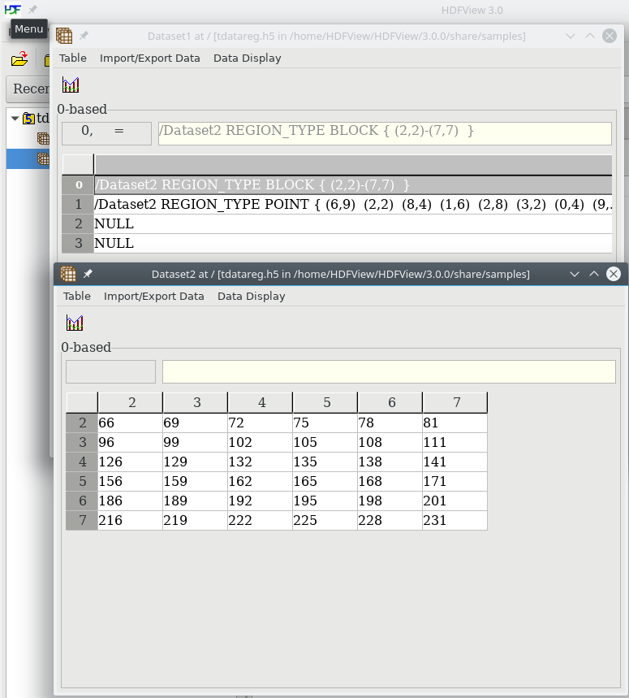
Dataset pointed by region reference block reference
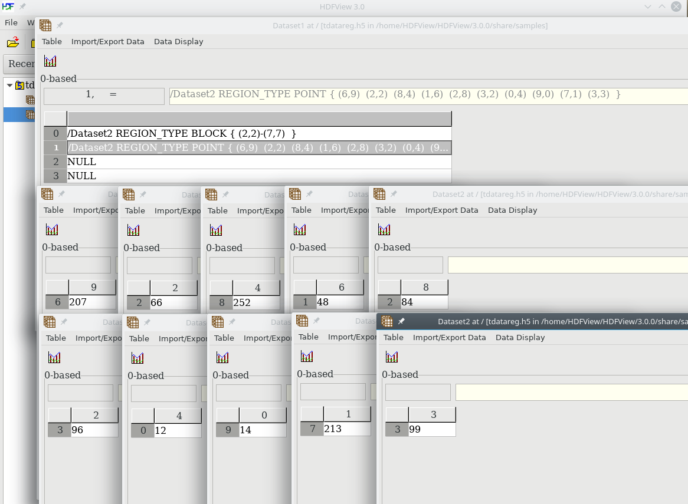
Dataset pointed by region reference point reference
The table data can be written to a binary file. Select “Import/Export Data” from the menu bar, then select the “Export Data to Binary File” from the dropdown menu. Select the order in which you want the bytes to be. The Save Current Data to Binary File dialog box pops up for you to enter the name of the file. The data values of the current table will be written to the file. The binary file does not contain any datatype and dataspace information. Currently, only the entire contents of the table are written to a binary file..
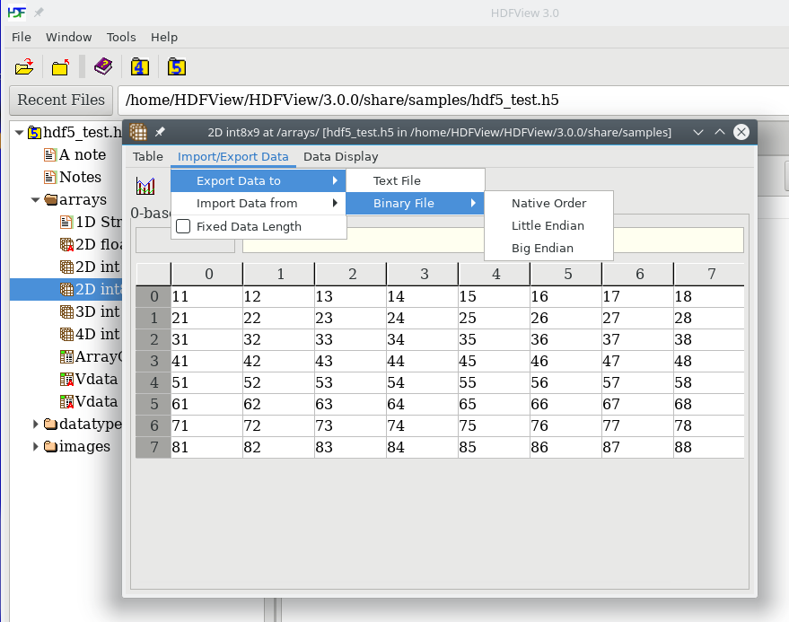
Save current data to binary file
You can fill the table directly from a binary file. Select “Import/Export Data” from the menu bar, then select the “Import Data From Binary File” command from the dropdown menu and select the byte order. It is assumed that the user should know the data type in the binary file and the byte order. Select the binary file to import. The cells of the table are filled with the corresponding values.
[Index] [1] [2] [3] [4] [5] [6] [7]
{kind=link}